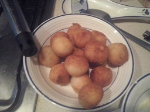

Croquetas de bacalao

Ingredientes para 5 personas:
- 250g de bacalao
- 60g de mantequilla
- 60g de harina
- 300g de leche
- Pan rallado
- 1 Huevo
Realización:
Poner el bacalao a hervir con un poco de agua ,
cuando empiece a hervir apartas enseguida , dejar
enfriar, desmenuzarlo y limpiarlo de espinas , picarlo
finito y reservar , en una sartén poner la mantequilla a
derretir y agregar la harina sin dejar de remover incorporar
la leche caliente , agregar el bacalao , removiendo durante
15 minutos aproximadamente , extender la masa en una fuente
y enfriar , formar las croquetas , pásalas por huevo y pan
rallado , freír en aceite fuerte y servir